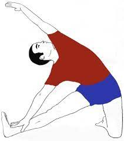
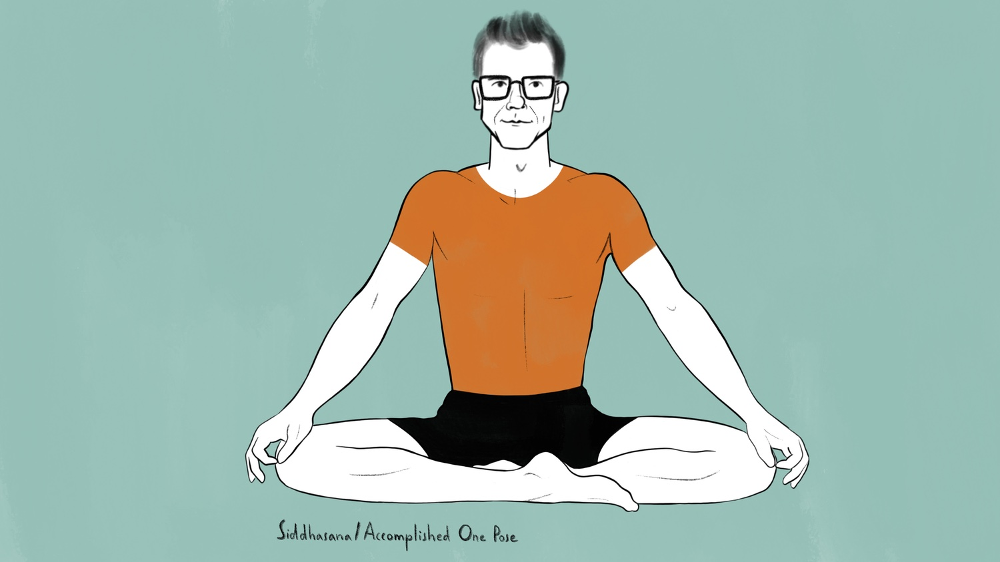

Inhale the future exhale the past

padmasana
It is an ancient asana in yoga, predating hatha yoga, and is widely used for meditation in Hindu, Tantra, Jain, and Buddhist traditions.
Improves digestion. This is because Padmasana yoga provides the abdominal portion of the body with a gentle massage, thereby boosting digestion. ... Helps relax the mind and alleviates stress. ... Eases childbirth. ... Helps reduce menstrual pain and cramps.
Parighasana
The pose is entered from an upright kneeling position. One leg is stretched straight out to the side, the arms are stretched out sideways, and the body is extended to the side of the outstretched leg until the arm lies along the leg. The other arm may be stretched up alongside the head, and the hand may eventually lie on top of the other hand and foot. 
An asana is a posture, whether for traditional hatha yoga or for modern yoga;[1] the term is derived from the Sanskrit word for 'seat'. While many of the oldest mentioned asanas are indeed seated postures for meditation, asanas may be standing, seated, arm-balances, twists, inversions, forward bends, backbends, or reclining in prone or supine positions. The asanas have been given a variety of English names by competing schools of yoga.
Siddhasana
Siddhasana is one of the oldest asanas. It is described as a meditation seat in the early Hatha Yoga text, the 10th century Goraksha Sataka. This states that Siddhasana ranks alongside Padmasana (lotus position) as the most important of the asanas, opening the way to liberation. The 15th century Hatha Yoga Pradipika similarly suggests that all other asanas are unnecessary once Siddhasana has been mastered.
improve your posture, lengthen your spine, and open your hips, chest, and shoulders.
An asana is a posture, whether for traditional hatha yoga or for modern yoga;[1] the term is derived from the Sanskritgit remote add origin https://github.com/Navnath-Bhorde/yogasan.git word for 'seat'. While many of the oldest mentioned asanas are indeed seated postures for meditation, asanas may be standing, seated, arm-balances, twists, inversions, forward bends, backbends, or reclining in prone or supine positions. The asanas have been given a variety of English names by competing schools of yoga.